Pixel Art
These are some of the pixel art works I’ve made over the years.
Since I was very young, I have been drawing - and have been fascinated with video game sprites and backgrounds. I naturally spent quite some time getting better at making pixelart, hanging on PixelJoint and the Spriters’ Resource forums.
Pretty much all of these were made entirely in mspaint - though I have been using other tools here and there, like usenti and GraphicGale, and more recently aseprite.
Original Pieces
This was done for on contest on Pixeljoint, constraints being a very limited 8-color palette (6 colors plus black and white) and a predetermined canvas size.
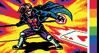
This one is purely monochromatic (black/white), I made this to experiment with pixel dithering patterns.
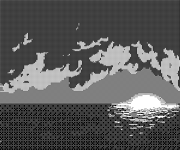
This one is a rather simple sprite I had at my beginnings, back in 2012.
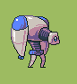
This is one of the first characters I ever designed, originally for a sprite constest on the Spriters’ Resource, way back in 2010.
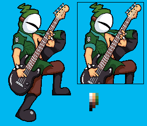
Demake Mockups
These are some NES-style “demake” mockups, that I made to illustrate some of my chiptune covers.
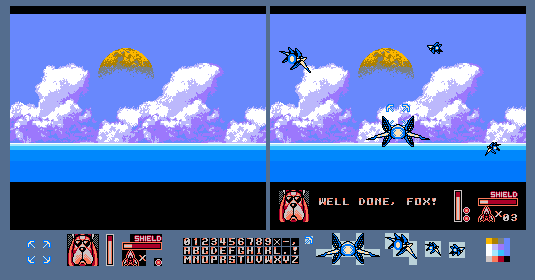
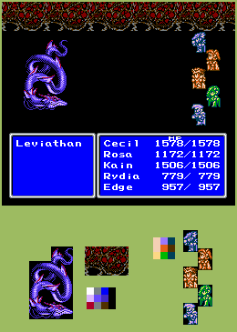
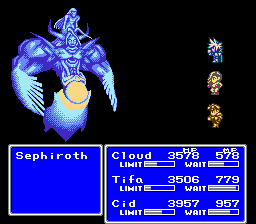
This piece was an experiment, to attempt to show how it might be possible to have some background graphics displayed on the original Gameboy Pokemon games.

Fanart
Here are a couple sprites done in the style of the Gameboy Advance Fire Emblem games. I have always been a big fan of these games, as you can tell from my Emblem Magic project.
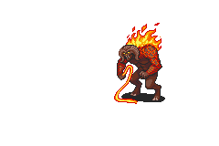
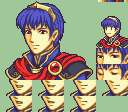
I was also always a big fan of the Paper Mario games, and so I created a couple of sprites edits, mostly to reproduce characters from Paper Mario: The Thousand-Year Door in the style of the original Paper Mario on the Nintendo 64.
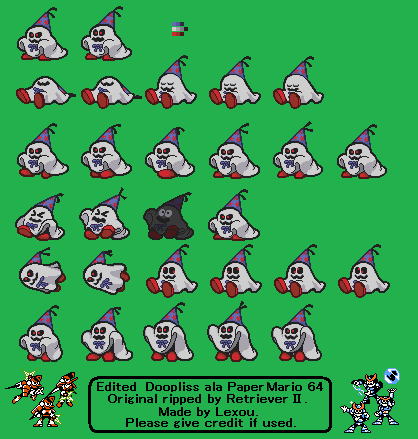
The Fighters’ Resource
This was a pretty cool community game project on the Spriters’ Resource forums. Many of the regular users there had a “character reference”, a mascot/avatar character to represent themselves. Since most all of the users on the forum were big pixelart enthusiasts, a good friend of mine, Gorsal made a full character sprite sheet for his own “ref” mascot, in a pretty simple style, along with pretty extensive style guides for others to make their own “ref” mascot sprite sheets. You can download a playable build of the game here
Unfortunately, I had never finished the spritesheet for my own character, only basic idle and movement animations: - idle: 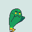 - move forwards: 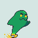 - move backwards: 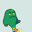
This strange sprite was made to serve as a “character select” portait. The idea for The Fighters’ Resource was to poke fun at the age-old tradition of most arcade fighting games, which is to have overly detailed character portraits, that are often quite different from how the character actually looks in-game. Here this idea was turned all the way up to eleven, by requiring that each of our “character select” portraits be done in a style reminiscent of JoJo’s Bizarre Adventure.
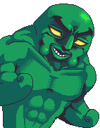
TSRPG
Another cool community game project on the Spriters’ Resource forums. This time instead of a fighting game using the characters/mascots of the forum’s users, the goal here was to make a silly JRPG game about the wonderful wacky world of the Spriters’s Resource forums.
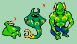
The rightmost sprite here is the humanoid version of my mascot character, and was done by VirtuaBoy123 to be one of the enemies for the game. I decided to chip in & help out by creating the leftmost sprite - the mantaray version of my mascot. Seeing the two side-by-side, made me want to imagine a mid-level between the two, similar to a Pokemon evolution line - this is why I also created the larger darker manta ray in the middle.
Upscaled/revamped NES sprites
This is some of the first “custom” pixelart I had ever done, way back in 2010: This was an old short-lived trend on the Spriters’ Resource forums, wherein you take an old-school NES sprite, scale up its size times four, and choose 3 new colors to add to it.
{kind=link}
A good friend of mine, Chris2balls, had made several of these: Ice Climber, Balloon Fight, Getsu Fuuma
And finally, here are the 2 (unfinished) ones that I made, though they pale in comparison to the previous examples…
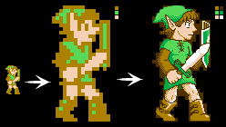
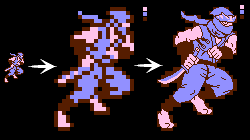